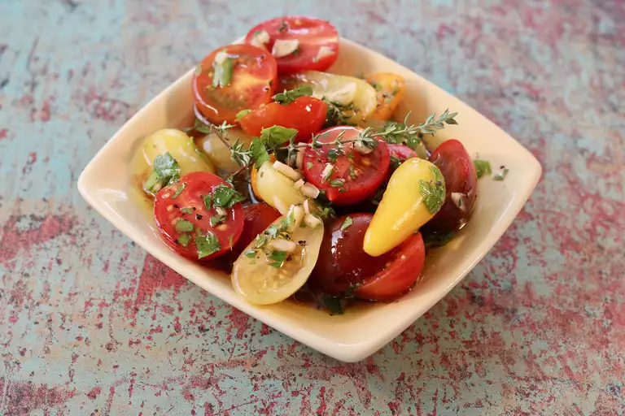

Marinated Tomatoes Recipe

Marinated cherry tomatoes are a very delicious way to use an overabundance of cherry tomatoes.
Ingredients
- ¼ cup vegetable oil
- 3 tablespoons cider vinegar
- 1 ½ teaspoons white sugar
- 1 teaspoon dried parsley
- 1 teaspoon dried basil
- 1 teaspoon dried oregano
- ½ teaspoon salt
- 4 cups halved cherry tomatoes
Steps
- In a small bowl or cup measure, mix together oil, vinegar, sugar, parsley, basil, oregano, and salt.
- Pour dressing over cherry tomatoes in a serving dish, and gently stir to coat. Chill for at least 2 hours.
Gently stir from bottom to top, coating all tomatoes, before serving.